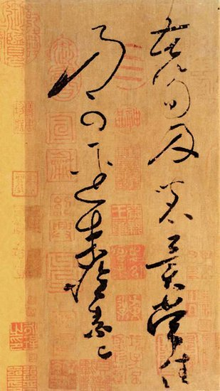
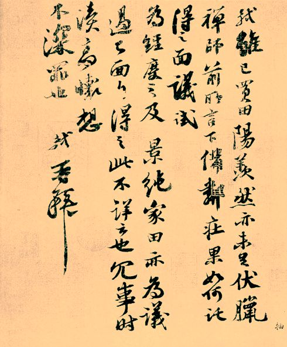

茶与书法
“酒壮英雄胆，茶助文人思”，茶能触发文人创作激情，提高创作效果。但是，茶与书法的联系，更本质的是在于两者有着共同的审美理想、审美趣味和艺术特性，两者以不同的形式，表现了共同的民族文化精神。也正是这种精神，将两者永远地联结了起来。
中国书法艺术，讲究的是在简单的线条中求得丰富的思想内涵，就象茶与水那样在简明的色调对比中求得五彩缤纷的效果。它不求外表的俏丽，而注重内在的生命感，从朴实中表现出韵味。对书家来说，要以静寂的心态进入创作，去除一切杂念，意守胸中之气。书法对人的品格要求也极为重要的，如柳公权就以“心正则笔正”来进谏皇上。宋代苏东坡最爱茶与书法，司马光便问他: “茶欲白墨欲黑，茶欲重墨欲轻，茶欲新墨从陈，君何同爱此二物? ”东坡妙答曰:“上茶妙墨俱香,是其德也；皆坚，是其操也。譬如贤人君子黔皙美恶之不同，其德操一也。”这里，苏东坡是将茶与书法两者上升到一种相同的哲理和道德高度来加以认识的。此外，如陆游的“矮纸斜行闲作草,晴窗细乳戏分茶。”这些词句，都是对茶与书法关系的一种认识，也体现了茶与书法的共同美。

苦笋贴
唐代是书法艺术盛行时期，也是茶叶生产的发展时期。书法中有关茶的记载也逐渐增多，其中比较有代表性的是唐代著名的狂草书家怀素和尚的《苦笋贴》。
宋代，在中国茶业和书法史上，都是一个极为重要的时代，可谓茶人迭出，书家群起。茶叶饮用由实用走向艺术化，书法从重法走向尚意。不少茶叶专家同时也是书法名家。比较有代表性的是“宋四家”。

一夜贴
唐宋以后，茶与书法的关系更为密切，有茶叶内容的作品也日益增多。流传至今的佳品有苏东坡的《一夜帖》、米芾的《苕溪诗》、郑燮的《竹枝词》、汪巢林的《幼孚斋中试泾县茶》等等。其中有的作品是在品茶之际创作出来的。至于近代的佳品则更多了。